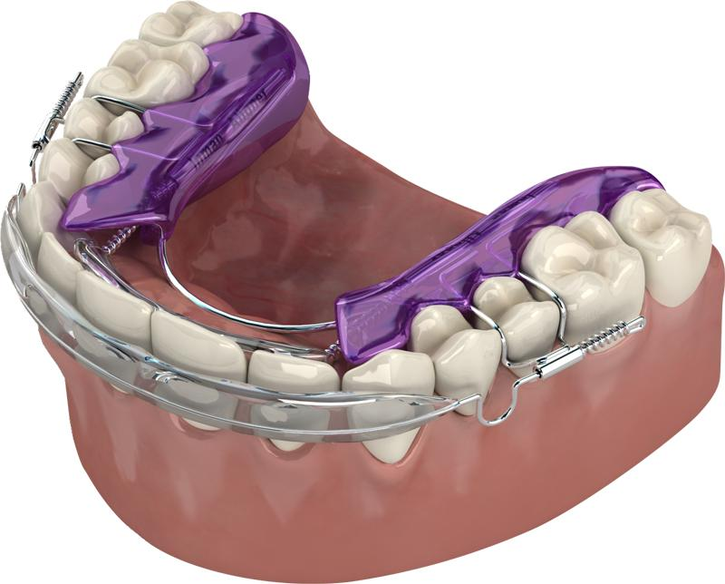

What is an Inman Aligner?
The Inman Aligner is a simple removable appliance used to align front teeth quickly and safely.

Front teeth aligned in weeks
The average treatment time for aligning the front teeth is between 6 and 18 weeks, depending on the amount of crowding.
It’s ideal as a stand-alone treatment, or to pre-align teeth before further cosmetic options such as bonding or minimal veneers.
How does it work?
The Inman Aligner has nickel titanium coil springs that power two aligner bows that gently oppose each other, guiding the teeth into their new position.
These gentle forces are active over a very large range of movement, which is why the Inman Aligner works so quickly.
The inner bow pushes forwards, while the outer bow pulls back on the front teeth.
Other ways we straighten teeth
If more than the front teeth need moving, one of these may suit you better.
The information on this page is general in nature and is not a substitute for an examination. Any surgical or invasive procedure carries risks. Before proceeding, you should seek a second opinion from an appropriately qualified health practitioner.